GitLab
关于
- GitLab 也是基于网络的 Git 仓库管理器，并有 wiki 和问题跟踪功能。
- GitLab 跟 GitHub 界面很像，两者都有社区版（开源版）和企业版（付费版），但两者的区别也相对明显。
- GitLab 自称比 GitHub 更好，具体有哪些部分，请参考 GitLab 文档。
安装
安装前的几点说明
- 这里只演示 GitLab CE Omnibus 软件包的安装。
- 这个软件包只支持64位的操作系统，支持的 Linux 发行版版本包括 Ubuntu 12.04，Ubuntu 14.04，Debian 7，Debian 8，CentOS 6 (and RedHat/Oracle/Scientific Linux 6) 和 CentOS 7 (and RedHat/Oracle/Scientific Linux 7) 。
- 这里示范的操作系统为64位 Ubuntu 14.04。 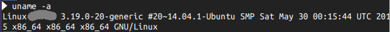
- 其它的支持的发行版版本安装过程应该是相通的。
- 下载安装之前请仔细查看 下载页的安装说明。 下面是在我安装前所要查看的内容
首先按官网下载前的第一步，把必须的软件包安装上。
sudo apt-get install curl openssh-server ca-certificates postfix在这安装过程中有个 PostFix 的安装选项，默认是选择了 "Internet Site"，GitLab 也推荐是这个，那就这个好了。
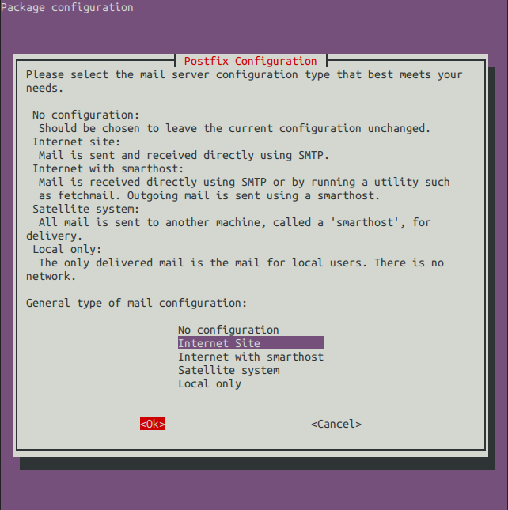
后面还有个 mail name 的设置，如果只是自用或者是局域网内使用，一般也不用多去设置，默认就好了。
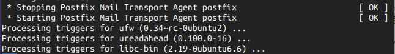
如果是一个开放的 Git 托管平台，那么请按说明填上网站的域名最好，而且还需要去搜索相关的 PostFix 使用手册，进行更进一步的配置，以更好地使用这个邮件服务器。这里不作涉及。
安装 GitLab CE Omnibus 软件包
首先导入软件包仓库地址
curl https://packages.gitlab.com/install/repositories/gitlab/gitlab-ce/script.deb.sh | sudo bash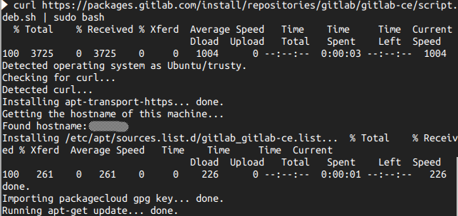
其效果就是在
/etc/apt/sources.list.d这个位置加一个仓库地址文件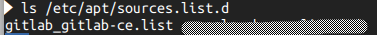
然后就是安装
sudo apt-get install gitlab-ce但国内网络有个不好的地方，这软件包大部分时间里下载速度简直难受。
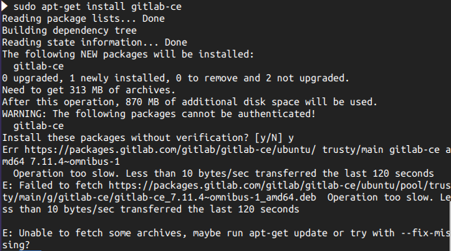
咋办？这时有至少有两种解决方法：
- 记住下载链接，找台 Windows 电脑用迅雷下载下来后进行安装，但有可能会安装失败，因迅雷下载过程中可能有少量丢包或者高速下载已经有错误的包。
- 从百度网盘离线下载后再下载到 Linux 上。感谢国人，Ubuntu 及其他的一些发行版有实现了大部分百度网盘 api 的客户端，离线下载下来后就可以从网盘下载了。
- 更多的办法也是有，比如 VPN 加速什么的，这里不作介绍，请读者自行摸索。
搞来软件包后，安装就是简单的一句（当前的 GitLab CE Omnibus 软件包的版本是 7.11.4）
sudo dpkg -i gitlab-ce_7.11.4\~omnibus-1_amd64.deb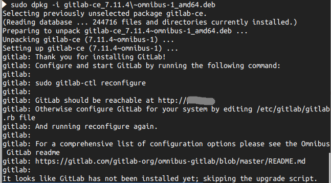
配置 GitLab
其实就是简单的一句命令
sudo gitlab-ctl reconfigure然后就会输出一大堆的东西，如果中间有错误，请重复一次上面的命令，直到出现相同的错误。 如果输出的最后出现
gitlab Reconfigured!字样，说明配置成功了。 如果多次执行上面的命令还有错误，而且错误一样，那么请自行搜索错误。成功安装
打开浏览器，输入相应的网址后，看到这个时，说明已经成功安装了。
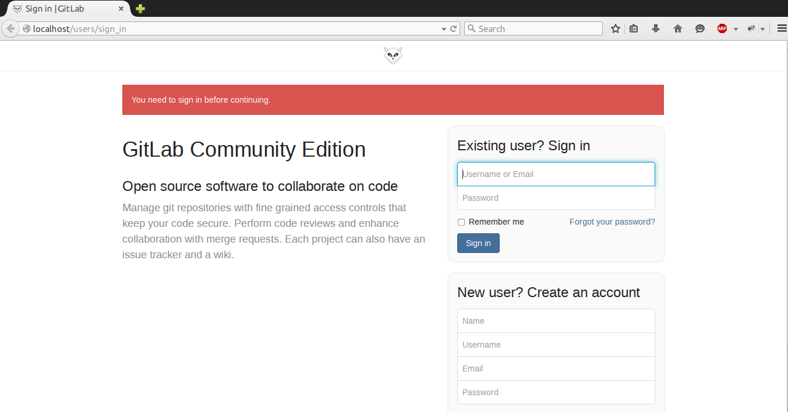
简单使用
初次登录
用户名是
root， 密码是5iveL!fe。修改密码。刚进去后，需要改 root 的密码，然后再登录一次
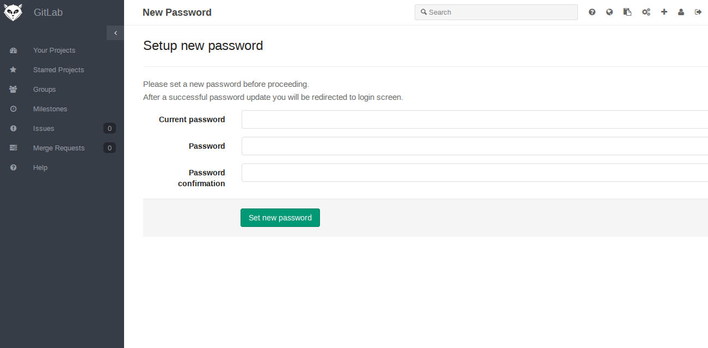
管理。
点击右上方的管理按钮可以进入管理界面
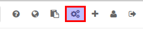

在这里你可以看到服务器概况，还有一堆的东西。左下角有一个 Settings，包含很多的设置。
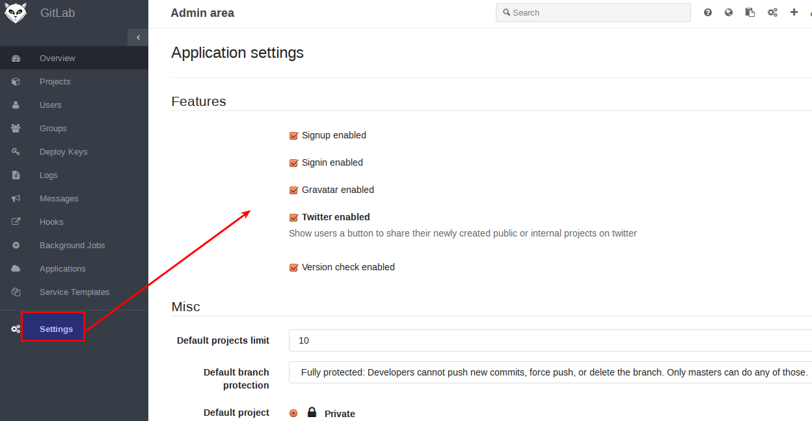
如果觉得 GitLab 有时需要半天才能加载完毕，有可能是网络问题，即 GitLab CE 要连上其官网进行版本检测等的东西，那么可以在上面这个界面里把相关的选项点掉，以加快加载。
创建新用户
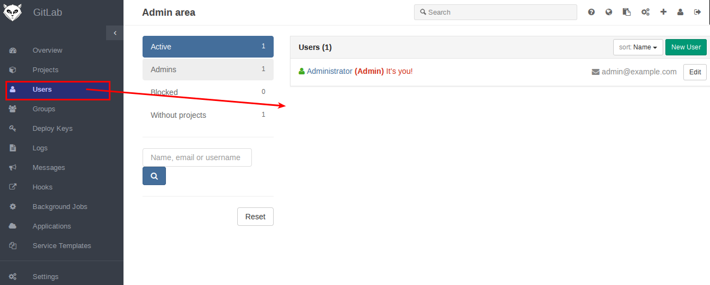
开始创建

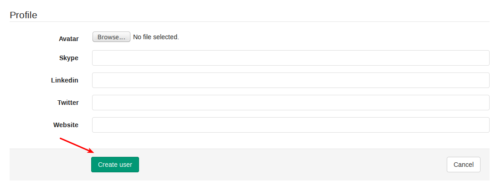
那里邮件最好填上真实的邮件地址，只要联着网，它会在创建用户成功后向你的邮箱发送一封邮件，并附有一个链接用以设置密码。 但这里我们不去看邮箱了，直接继续把密码设置了
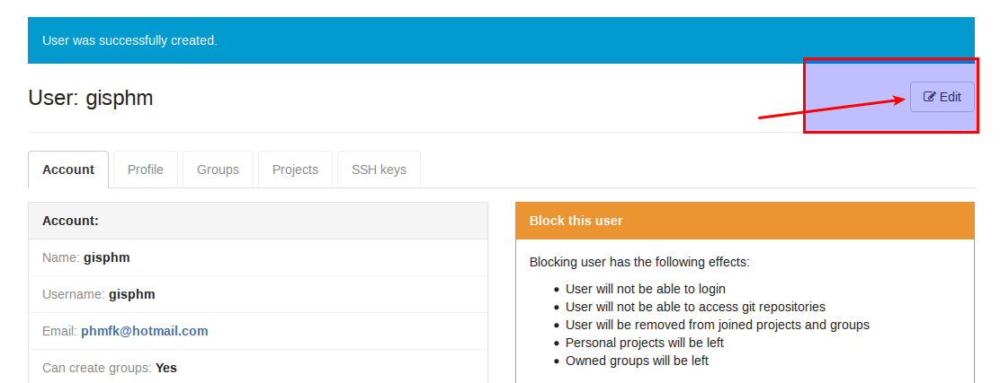
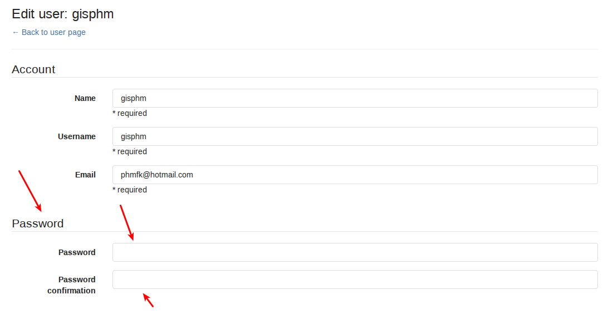
新用户登录
上面弄完之后，尝试一下新用户的登录。
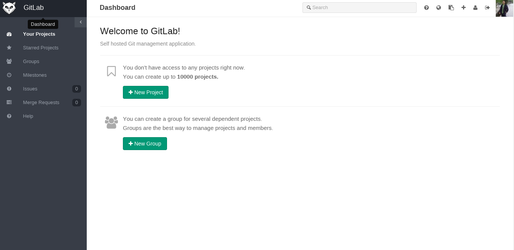
成功！
其他
上面这些弄完后，剩下的基本就是一些简单的使用过程了。慢慢摸索着用，这个软件还是相当简单的。 如果涉及不到二次开发，那么这个 Omnibus 打包的软件包已经足够使用了。
卸载
先运行以下命令
sudo gitlab-ctl uninstall它会删掉大部分配置内容
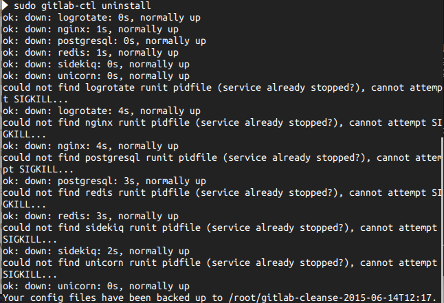
删除软件包
sudo apt-get purge gitlab-ce -y执行上面的命令即可基本删除 GitLab 软件包和剩余的配置内容。
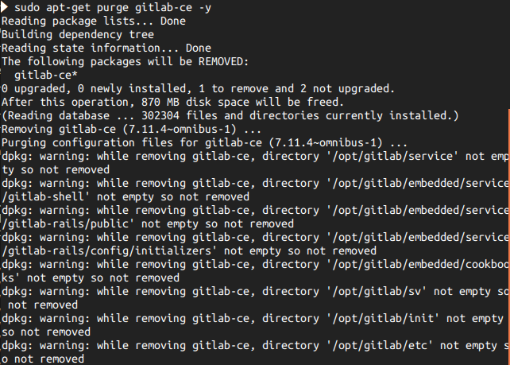
寻找尚未删除完全的文件夹并删除之
sudo -i find / -iname gitlab这一步主要是找出那些含有gitlab字样的目录，然后就是删除之
 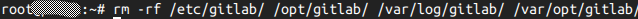
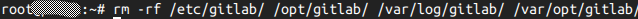
经过以上三步，GitLab-CE 就从系统里删除了。